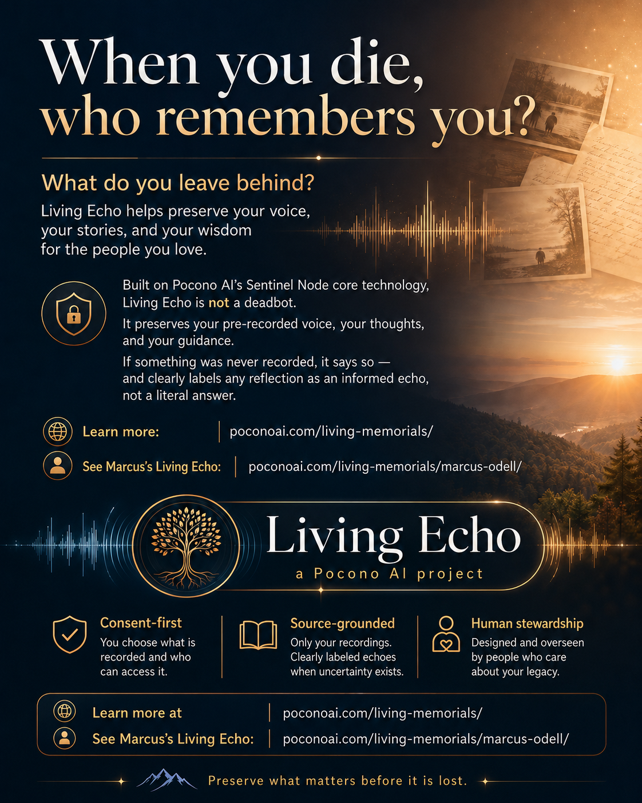

The Origin Story
A Celebration of Life,
Not a Denial of Death
Why Living Echo exists
Living Echo began with a deeply human question: what happens to the stories, wisdom, values, and guidance that never make it into documents?
The question
When you die, who remembers you?
This question is the foundation of Living Echo. Not as a way to avoid death — but as a way to preserve what a life actually contained.

Tap or click to view full size.
The idea
The Human Question
What happens to the wisdom, memories, values, humor, voice, and guidance that never make it into estate documents or photo albums?
People are not just dates on a stone. People are voices, stories, phrases, letters, jokes, arguments, values, memories, and love. A gravestone holds two numbers and a dash; a life holds everything the dash stood for.
The goal is not to make grief disappear. The goal is to give memory a place to breathe.
The approach
Preservation Before Simulation
Living Echo is designed to preserve source material first. Any interactive retrieval remains grounded in authorized recordings, writings, documents, and human-approved materials.
The system is not an invention engine. If something was never recorded, the system says so. Source-grounded answers, clear labels, human steward controls — those are the product.
“I am a remembrance model built from the preserved writings, recordings, and authorized materials of this person. I am not that person. But I can help you remember them.”
The boundaries
Not a Deadbot
Living Echo should be clearly understood for what it is not:
- It is not resurrection.
- It is not pretending the person is alive.
- It does not invent certainty where none exists.
- If something was never recorded, the system says so.
- It is not therapy.
- It is not legal advice.
- It is not autonomous decision-making.
- It is not an unrestricted impersonation engine.
What it is: a source-grounded, consent-first archive and governed retrieval layer built from what a person actually left behind.
The material
What a living memorial could include
Everything below already exists in most lives. The work is gathering it gently, with permission, before it scatters.
- Letters
- Emails
- Journals
- Academic papers
- Personal essays
- Voice recordings
- Video transcripts
- Public posts
- Family stories
- Interviews
- Creative work
- Ethical instructions
- Boundaries and permissions
- Messages for future generations
How it might work
Plain-language steps — retrieval over invention, labels over guesses, a human steward over everything.
- Gather preserved materials.
- Sort private, public, and family-authorized sources.
- Create a searchable archive.
- Use retrieval-grounded AI rather than free invention.
- Label whether an answer is quoted, paraphrased, or reconstructed.
- Add clear disclosures.
- Allow a family steward to correct, restrict, or retire the memorial.
In Marcus’s words
Why I Am Building This Now
I am building this because I am very sick. Some mornings I wake up screaming. Some days I am too weak to complete even basic work. This is not behavioral. It is the reality of severe illness.
When your body is failing, legacy stops being abstract.
I am not trying to create an AI version of myself that runs Pocono AI after I am gone. Pocono AI’s continuity must come from people — documentation, leadership, governance, delegation, and a resilient team.
This side project is different. It is about memory and presence.
I have written a large body of work: academic papers, emails, notes, arguments, reflections, project documentation, and personal thoughts. If those materials can be organized carefully, ethically, and honestly, then my family and friends may one day still be able to encounter something of how I thought, what I cared about, what I built, and what I wanted them to know.
This project is meant to resist disappearance.
Part of why this matters
My Friend Cory Pettit
Cory Pettit was my best friend. He died more than ten years ago.
It does not bite any less. I still want to talk to him.
No actual Cory memorial model should be built without family permission — especially from his parents or authorized family. That boundary is not negotiable here.
There may or may not be enough writing, audio, video, or media to create a meaningful remembrance model. But Cory’s loss is part of why this project matters.
Someday, carefully
My Grandmother
One day, Marcus would like to explore this for his grandmother. She wrote enough in her lifetime that her letters and writings may preserve something meaningful about her voice.
Because he does not have her direct permission, this would be framed carefully: an archival remembrance built from the writings she left behind — not a full simulation of her personhood. Her own words, organized and findable. Nothing more claimed.
The system should not speak beyond the record.
The first prototype
Marcus’s Living Echo
Marcus is building his own Living Echo while still here — while consent, context, and voice can still be shaped directly by him. It is the first prototype of the platform, created before death.
Visit Marcus’s Living Memorial PrototypeThe long-term vision
Me First, Then Anyone Who Wants to Preserve a Life
Marcus will be the first prototype — because he can consent while alive, shape the archive himself, and set the boundaries in his own words.
From there, the idea could grow: family members, friends, grandparents, ancestors, teachers, writers, founders, elders, people facing serious illness — anyone who wants to preserve their voice, stories, writings, and values.
Me first, because I can consent. Then family, friends, and eventually anyone who wants to preserve a life with dignity.
This is a long-term vision, not a finished product.
Ten commitments
Ethical Commitments
In plain language. They are the price of doing this at all.
- No false resurrection.
- Consent first, whenever possible.
- Family permission when needed.
- Source-grounded answers.
- Clear labels: quotation, paraphrase, reconstruction.
- No exploitation of grief.
- Dignity after death.
- Stewardship, and the right to retire a memorial.
- Separate permission for synthetic voice or likeness.
- Privacy protection for living third parties.
Research Proposal
The working proposal, AI Memorialization and the Ethics of Preserved Presence, outlines the ethical, technical, and human questions behind Living Echo.
Download the PDFContinue exploring
View the Living Echo Continuity Platform
The full platform serves families, veterans, estate professionals, organizations, and care teams — all built on the same ethical foundation.
Interested in Living Echo?
Join the early participant list and tell us where you fit. We will reach out as the program opens.
Join the Interest ListPlease do not submit private medical records, legal files, confidential client materials, or sensitive documents through this form.